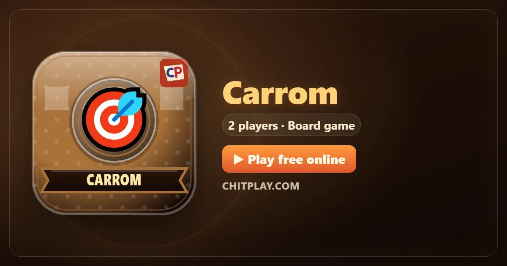

Carrom tips: aiming, cuts, rebounds and the queen
Updated 2026-11-15

Carrom rewards a steady hand, but it rewards a plan even more. Good players do not just pocket a coin; they leave the next one ready, keep the opponent’s coins blocked and take the queen at the right moment.
These tips work on a wooden board and in ChitPlay’s 3D carrom, where you aim the striker and choose the power before each shot.
▶ Play Carrom free Full Carrom rules
Aim through the coin to the pocket
Imagine a straight line from the pocket through the coin you want. The striker has to hit the coin on the far side of that line, exactly where the line leaves the coin. Aim the centre of the striker at that point, not at the centre of the coin.
Start with straight shots
A coin sitting in line between your baseline and a pocket is the easiest shot on the board. Take those first. Every coin you pocket gives you another turn, so easy shots chain into a run.
Cuts: hit thinner for a sharper angle
To send a coin off at an angle, hit it on its side. The thinner the contact, the sharper the angle and the less power the coin takes. Cuts need more practice than straight shots, so play them with gentle power to stay in control.
Use the edge for coins behind you
Coins between you and your own baseline can be reached with a rebound: bounce the striker off the board edge first. Aim at the mirror image of the coin across the edge.
Soft power keeps the board tidy
A hard shot scatters coins everywhere, often leaving easy shots for the opponent. Use just enough power to reach the pocket. Your striker also stays on the board instead of following the coin in: sinking the striker is a foul that brings back one of your coins and ends your turn.
Think one shot ahead
Before you shoot, ask where the striker will end up and what it will leave. A shot that pockets a coin and leaves your next coin in line is worth more than a flashy shot that leaves nothing.
Cover the queen with a plan
The queen counts only if you pocket one of your own coins on the same shot or the next one (covering). Take the queen when one of your coins is ready to follow it, ideally near a pocket. Taking it with nothing ready to cover just puts it back on the board.
Leave the last coins hard to reach
When you cannot make a shot, play a soft one that pushes the opponent’s coins against the edge or behind your own. A blocked board is hard to clear.
Questions
How do you cover the queen in carrom?
Pocket one of your own coins on the same shot as the queen or on the very next one. If you miss the cover, the queen goes back to the centre.
What is the easiest way to improve at carrom?
Practise straight shots with soft power, then cuts. Most points are lost to over-hit shots, not to bad aim.
Can I play carrom online with a friend?
Yes. ChitPlay carrom plays free in the browser against the computer, online or with a friend on their own phone.
More strategy guides
Ludo strategy · Call Break strategy · Chess strategy · Chit game strategy